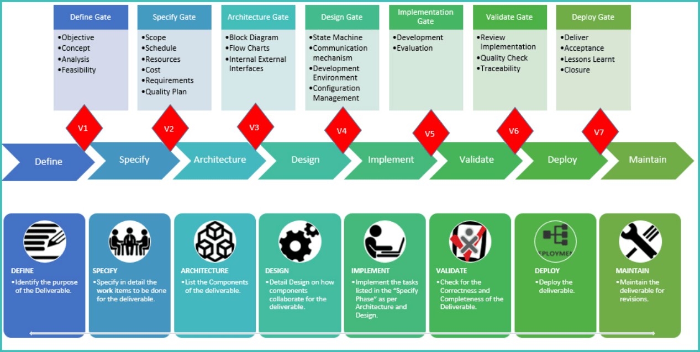

V Gates Process, from Votary Softech Solutions Pvt. Ltd. is a framework for Product Development and Applications delivery. The framework facilitates both – distributed and co-located project Management, with clearly defined process and guidelines for an end to end timely delivery with quality. The process emphasizes on the importance of documentation and Information flow among all stake holders at every phase of the project. Each phase has a set of clearly defined deliverables guided by its own policies and procedures. All deliverables are reviewed and approved before closure of a phase, by its respective V Gates tracker sheet, ensuring the completeness and quality of delivery commitments. The framework combined with infrastructure, quality orientation and workflow tools reduce engagement and validation risks for client compared to conventional delivery models, reducing time and cost risks in controlling project scope and rework.